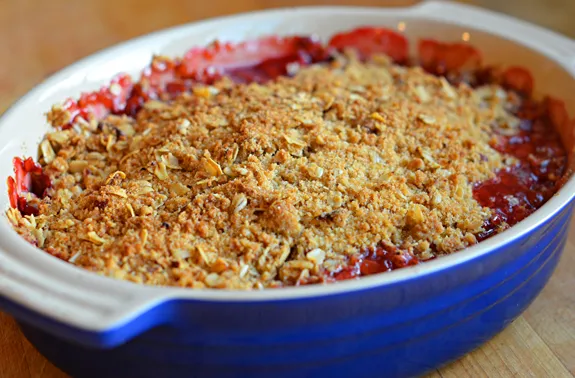

Strawberry Rhubarb Crisp

Ingredients
Perfect for a spring or early summer evening, this strawberry rhubarb crisp is one of the easiest and best desserts I know. Serve it warm from the oven topped with a scoop of vanilla ice cream.
- 1 pound rhubarb stalks, trimmed and sliced ½-inch thick
- ½ pound strawberries, hulled and quartered
- ½ cup granulated sugar
- 1½ tablespoons cornstarch
- 1 teaspoon vanilla extract
For the topping
- ¾ cup all-purpose flour, spooned into measuring cup and leveled-off with a knife
- ½ cup packed light brown sugar
- 2 tablespoons granulated sugar
- ¼ teaspoon salt
- 6 tablespoons unsalted butter, cut into ½-inch cubes
- ¾ cup old fashioned rolled oats
- ½ cup chopped pecans
- Lightly sweetened whipped cream or vanilla ice cream, for serving (optional)
Recipe Instructions
Preheat the oven to 350°F.
- In a large bowl, combine the rhubarb, strawberries, sugar, cornstarch, and vanilla. Stir until the fruit is evenly coated with the sugar mixture, and the sugar mixture is no longer white.
Transfer the fruit mixture to a 2-quart or 8-inch baking dish (no need to butter it) and set aside while you prepare the topping.
- In the bowl of a food processor, combine the flour, brown sugar, granulated sugar and salt. Process until well combined, about 30 seconds. Add the cold butter and pulse until the mixture resembles coarse crumbs, with a few pea-sized clumps of butter within. Transfer to a medium bowl and stir in the oats and chopped pecans.
- Spoon the topping evenly over the fruit without packing down. Bake for 45-55 minutes, until the fruit is bubbling around the edges and the topping is golden brown. Cool for 20 minutes before serving. Spoon into shallow bowls and serve with vanilla ice cream.
Return to Main Page